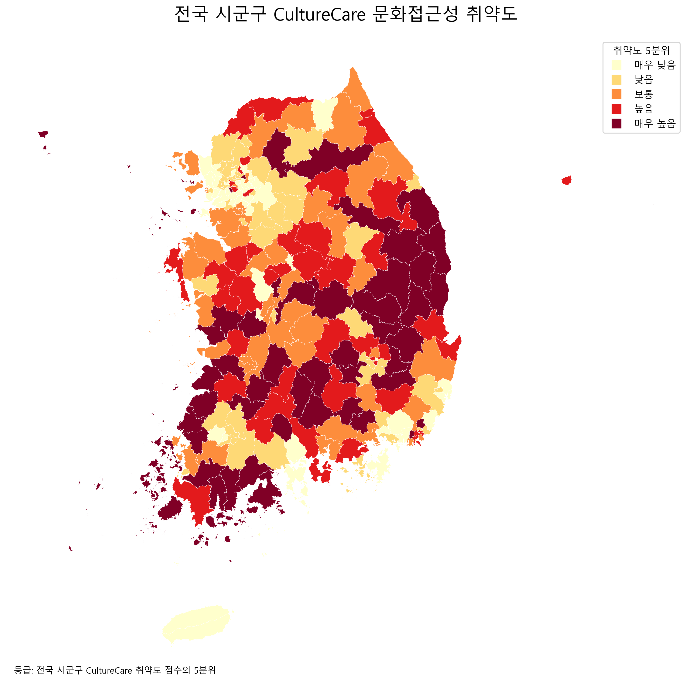
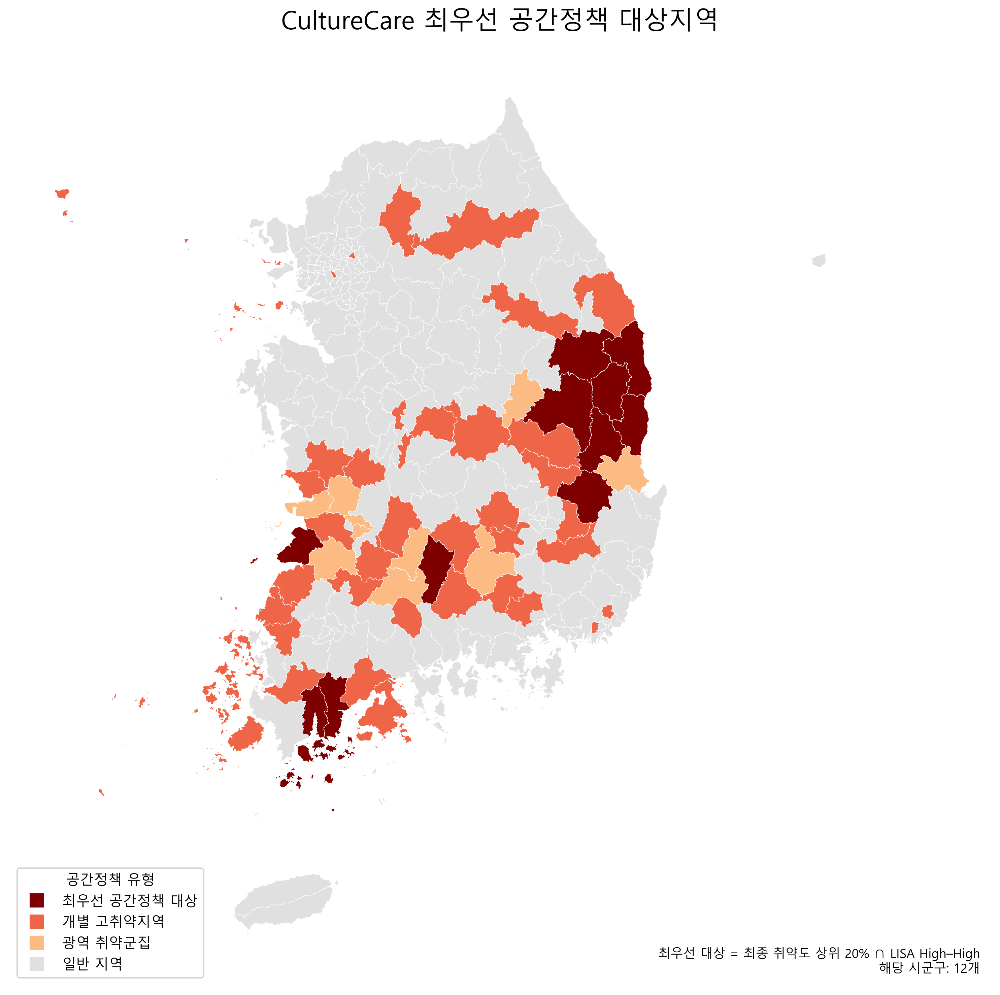
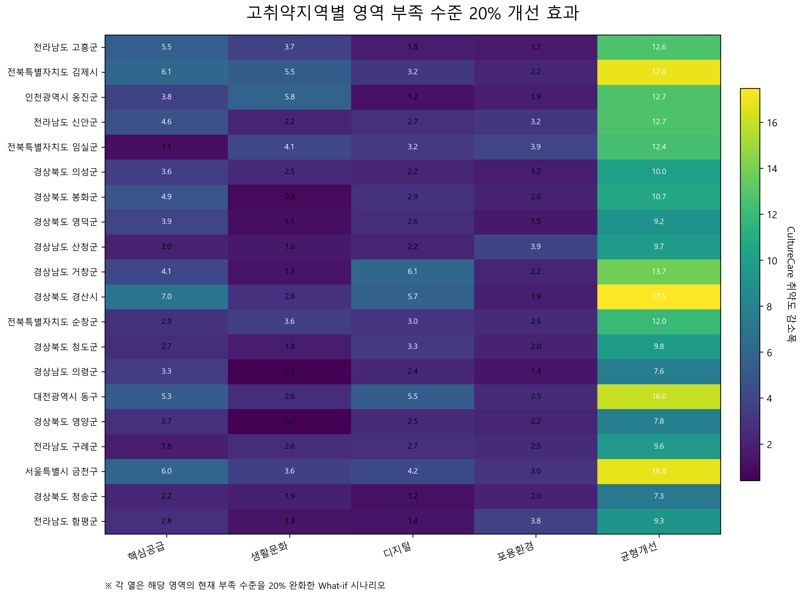
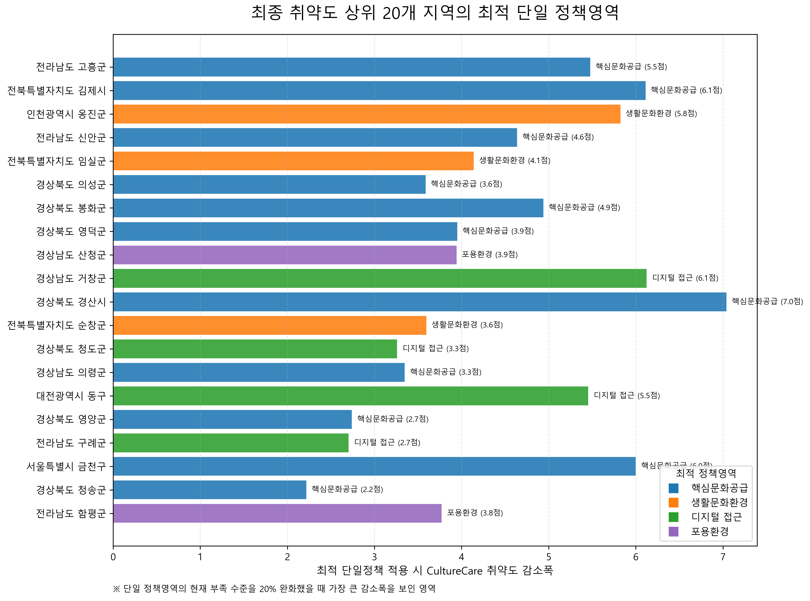
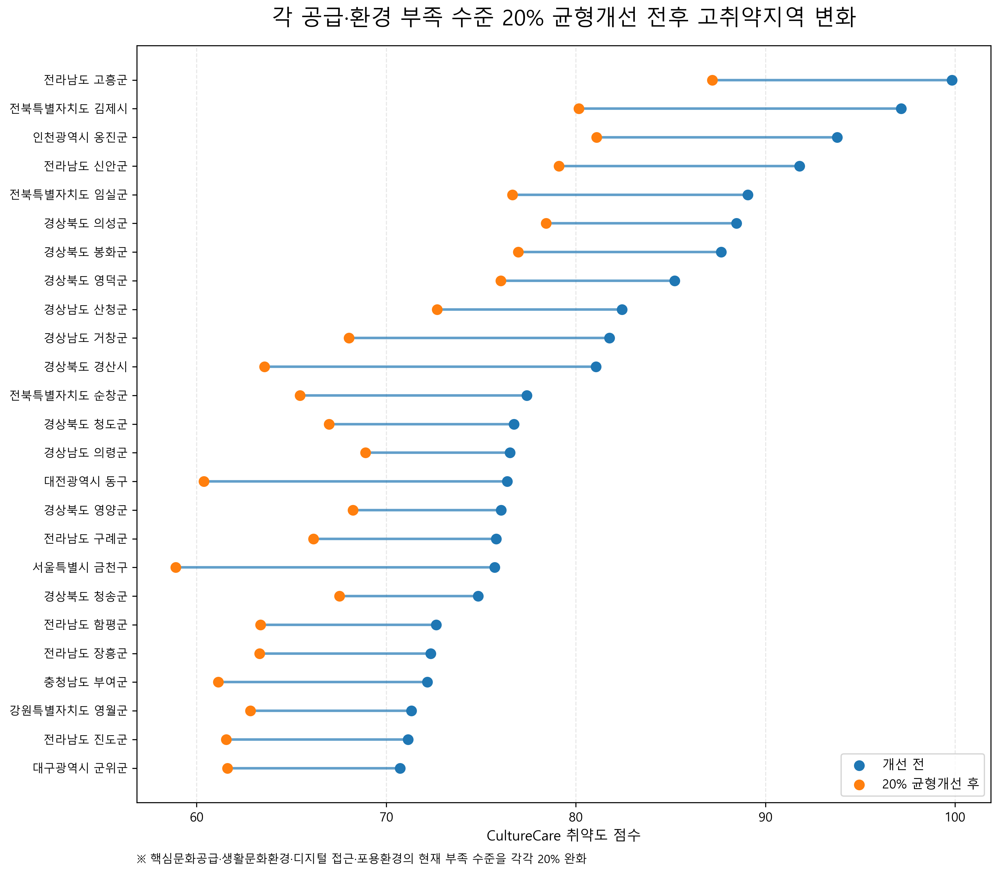

시설 수만으로는 문화접근성을 설명하기 어렵습니다.
도서관과 공연장이 존재하더라도 고령인구가 많고, 이동·디지털·포용환경이 부족한 지역에서는 문화자원이 주민에게 실제로 닿기 어렵습니다. CultureCare는 ‘무엇이 있는가’가 아니라 ‘주민에게 닿을 수 있는가’를 분석합니다.
전국 252개 시군구의 문화자원, 인구·가구 구조, 디지털 접근성, 생활문화 기반, 포용환경을 융합해 문화지원이 가장 절실한 지역과 먼저 개선해야 할 정책영역을 제안합니다.
도서관과 공연장이 존재하더라도 고령인구가 많고, 이동·디지털·포용환경이 부족한 지역에서는 문화자원이 주민에게 실제로 닿기 어렵습니다. CultureCare는 ‘무엇이 있는가’가 아니라 ‘주민에게 닿을 수 있는가’를 분석합니다.
복합지수, 민감도 검증, 공간분석, 정책 시뮬레이션을 하나의 정책 판단 흐름으로 연결했습니다.


상위 취약지역을 선택하면 점수, 순위, 취약원인, 정책방향을 확인할 수 있습니다.
목록에서 시군구를 선택하면 상세 진단 결과가 표시됩니다.
최종 취약도 상위 20%와 LISA High–High를 동시에 만족한 지역은 인접 지자체 공동정책이 필요한 최우선 공간정책 대상으로 분류했습니다.

각 정책영역의 현재 부족 수준이 20% 또는 40% 완화된다는 가정 아래 지수를 재산정한 시나리오 분석입니다.


